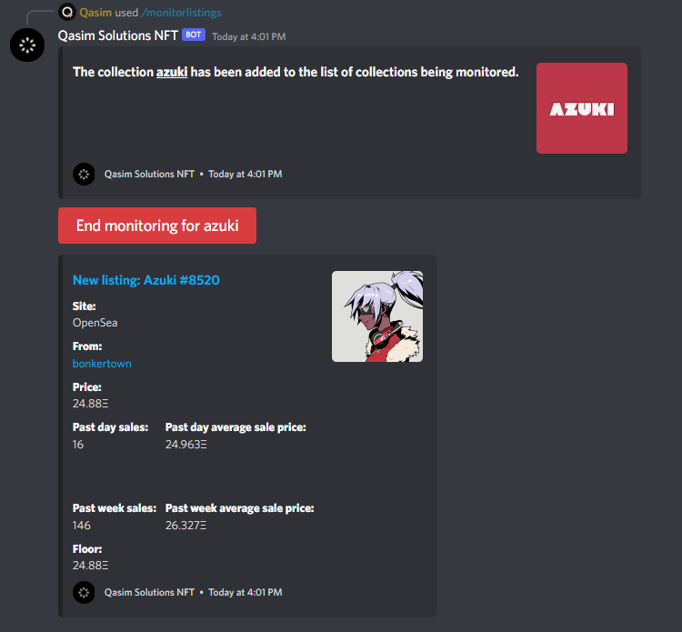

Opensea Monitor
This project allowed me to develop a lot of understanding when it came to how Javascript works and how I can use Discord to achieve my goal. Once again, this project was targeted at NFT communities as the ability to monitor a NFT collections sales or listings is quite useful. I had developed a few methods previously to complete this product but there were not great solutions. One of the issues I ran into originally was that I had no way to keep track of when a user executed a command, as the command would contain the collection and what is being monitored about that collection. At first I thought storing it locally on the file server would be the only way, but I then looked further into the DiscordJS documentation and figured out how to separate different command executions so that I can execute as many commands as I want without the code overlapping. The next issue was ensuring that the user does not get rate-limited as I am using the Opensea API to retrieve the events that are taking place with the collections. I combatted this issue by introducing API key rotation within the code, as well as utilizing an interval based system to ensure I wasn't constantly checking for events. The code is dynamic and it is based on the user entering the slug for the NFT collection. You also can end the monitoring process at any time by clicking the red button attached to the embed that appears after executing the command. Below is a demonstration of the commands and on the right side you can see a sample image when the command is being used.